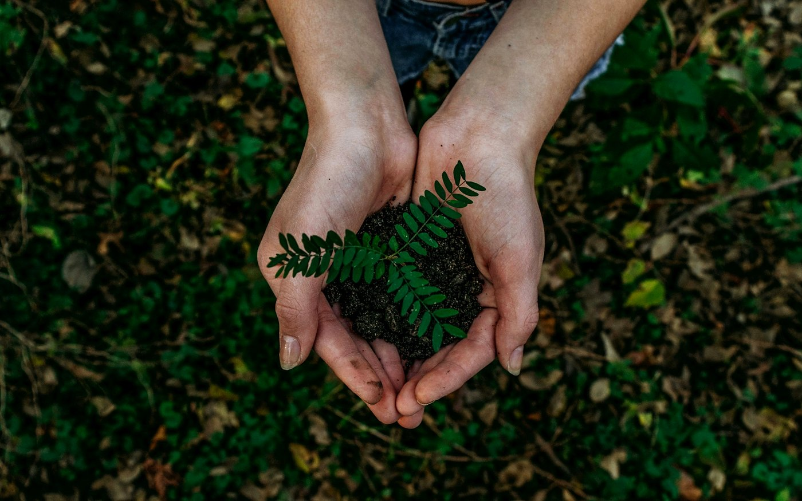

01
환경 · 기후 · 에너지 교육
기후위기를 ‘지식’이 아니라 일상 생활의 ‘실천 행동’으로 연결합니다.
초·중·고 학교와 유치원, 기관·기업을 대상으로 기후·환경·에너지 이슈를 대상의 눈높이에 맞춰 참여형 수업으로 풀어냅니다. 유아환경학교 운영 컨설팅과 교사 연수, 산림치유 프로그램도 함께합니다.
프로그램 공통 방향
- 기후·환경·에너지 이슈를 학생 눈높이로 해석
- 교과·창의적 체험활동·자유학기제와 연계 가능
- 강의식이 아닌 참여형·사고 확장형 수업
- 학교 상황(학년·시간·예산)에 맞춘 맞춤 운영
운영 방식
- 수업 시간
- 학교 일정에 맞추어 협의
- 운영 형태
- 단회 특강 · 연속 차시 · 학기 단위 운영
- 구성 방식
- 학년·학교별 맞춤 구성
- 커리큘럼
- 세부 커리큘럼은 협의 후 제공
대상별 프로그램
초등학교 1–6학년
초등학교 환경교육
자연 관찰 · 생태 감수성 · 기후 이야기 · 생활 속 실천
- 학교숲·생태텃밭·도시숲을 활용한 수업
- 그림·관찰·이야기 중심 활동
- 기후위기를 함께 생각해보는 이야기로 접근
중학교 1–3학년
중학교 환경교육
기후위기 이해 · 에너지 전환 · 소비와 환경 · 선택의 영향
- 기후·환경 이슈를 구조적으로 이해
- 토론·사례·활동지로 사고 확장
- ‘왜 바꿔야 하는가’를 스스로 고민하도록 설계
고등학교 1–3학년
고등학교 환경교육
기후위기와 사회 · 에너지 정책 · 지속가능발전 · 진로 연계
- 사회·경제·정책 맥락에서 이해
- 실제 사례 중심의 수업
- 환경·기후 관련 진로 탐색 요소 포함
이런 학교에 추천합니다 환경교육을 처음 시작하는 학교 · 생태텃밭·학교숲 연계 · 자유학기·창의적 체험활동 · 진로·융합 수업
컨설팅 · 연수 · 산림치유
유아 · 유치원
유아환경학교 운영 컨설팅
2026 국가환경교육센터 유아환경학교 수도권역
- 수도권역 유치원 4곳 운영 컨설팅
- 유아 눈높이에 맞춘 환경교육 활동 설계
- 기관 여건에 맞는 운영 방식 자문
해설사 · 실무자
해설사 · 실무자 연수
해설 기법 · 프로그램 설계
- 자연환경해설사 기본양성과정 등 강의
- 해설 기법과 프로그램 설계 실습
- 기관·단체 요청에 따른 맞춤 연수
숲 · 치유
산림치유 · 숲 체험 프로그램
걷기 · 계절 감각 · 쉼
- 숲길 걷기와 계절 관찰을 중심으로 구성
- 느린 활동으로 몸과 마음의 쉼을 돕는 진행
- 기관·단체 대상 프로그램 운영
현장 사례
-
2026
국가환경교육센터 유아환경학교 컨설팅
수도권역 유치원 4곳 — 유아 환경교육 운영 방식과 프로그램 구성 컨설팅
-
2025.12
강원 평창중학교 환경교육
하리 에너지학교 — 탄소제로실천 · 에코크리에이터 · 에너지야놀자+지구식단
-
2025.12
울산과학고등학교 환경교육
기후테크의 이해와 미래 산업 전략
초록을잇다 교육의 차별점
- 현장 경험을 바탕으로 한 현실적인 교육 설계
- 학생 참여를 이끄는 질문 중심 수업
- 교육 이후에도 이어지는 기록과 확장
- 학교 상황을 이해하는 유연한 운영
기관·기업 대상 프로그램도 함께 운영합니다.